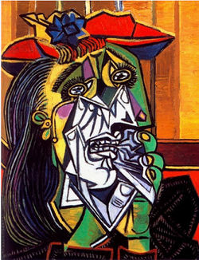

Pablo Ruiz Picasso (Málaga, 25 de octubre de 1881-Mougins, 8 de abril de 1973) fue un pintor y escultor español, creador, junto con Georges Braque, del cubismo.
Es considerado desde la génesis del siglo xx como uno de los mayores pintores que participaron en muchos movimientos artísticos que se propagaron por el mundo y ejercieron una gran influencia en otros grandes artistas de su tiempo. Sus trabajos están presentes en museos y colecciones de toda Europa y del mundo. Además, abordó otros géneros como el dibujo, el grabado, la ilustración de libros, la escultura, la cerámica y el diseño de escenografía y vestuario para montajes teatrales. También tiene una breve obra literaria.
La Gioconda

Guernica es un famoso cuadro de Pablo Picasso, pintado entre los meses de mayo y junio de 1937, cuyo título alude al bombardeo de Guernica, ocurrido el 26 de abril de dicho año, durante la guerra civil española.
Las señoritas de Avignon

Las señoritas de Avignon, Las señoritas de Aviñón o, más correctamente, Las señoritas de la calle de Avinyó, es un cuadro del pintor español Pablo Picasso pintado en 1907 al óleo sobre lienzo y sus medidas son 243,9 x 233,7 cm. Se conserva en el Museo de Arte Moderno de Nueva York.
La mujer que llora

La mujer que llora es un óleo sobre lienzo pintado por Pablo Picasso en Francia en 1937. Picasso estaba intrigado con el tema y revisó el tema varias veces ese año. Esta pintura, creada el 26 de octubre de 1937, fue la más elaborada de la serie. Sus dimensiones son 60 х 49 cm, 23 19 х 19 ¼ pulgadas.
El Sueño
El sueño es un cuadro del pintor español Pablo Picasso pintado en 1932. Está hecho mediante la técnica del óleo sobre lienzo y es de estilo cubista.
Mujer frente al espejo

La chica frente a un Espejo es una pintura por Pablo Picasso que fue creada en marzo 1932.Considerado a ser como una de sus obras maestras, la pintura ha sido ampliamente conocida por sus variadas interpretaciones del amante y la amada.